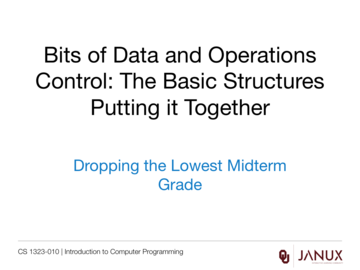

Review for First Midterm
The examination that tests the topics covered in the first quarter of the course.
The solution to Midterm 1.
The examination that tests the topics covered in the first quarter of the course.
The solution to Midterm 1.
The solution to Midterm 1.
Grade Last Problem .xlsx file
Five examples of examinations that test the topics covered in the first quarter of the course.
Five example documents of Midterm 1 solutions.
Java code developed in the videos from this lesson.
Lecture presentation
